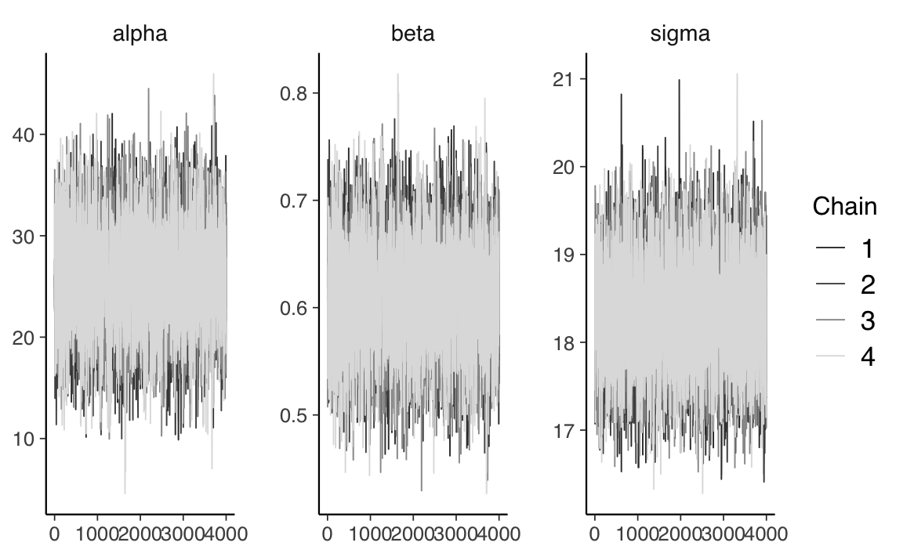

28 Modello di regressione in linguaggio Stan
Passiamo ora alla versione bayesiana del modello di regressione. Mostreremo qui che, se vengono usate delle distribuzioni a priori non informative, si ottengono delle distribuzioni a posteriori dei parametri il cui massimo a posteriori è simile alle stime frequentiste dei minimi quadrati. In questo Capitolo, inoltre, mostreremo come sia possibile usare il linguaggio probabilistico Stan per la stima dei parametri del modello di regressione e per l’inferenza.
28.1 Specificazione del modello
La specificazione del modello lineare bayesiano inizia nello stesso modo dell’approccio frequentista, ovvero con la specificazione della seguente equazione:
\[ y_i = \alpha + \beta x_i + \varepsilon_i, \quad i = 1, \dots, n. \]
Si assume che gli errori, \(\varepsilon_i\), siano indipendenti e identicamente distribuiti come variabili casuali Normali con media zero e varianza costante \(\sigma^2\). Queste ipotesi sono esattamente uguali a quelle che vengono usato nell’inferenza frequentista. Il nostro obiettivo è aggiornare le distribuzioni a priori dei parametri sconosciuti \(\alpha\) e \(\beta\) alla luce dei dati \(x_1, y_1, \dots, x_n, y_n\). Solitamente, è desiderabile scegliere distribuzioni a priori che hanno uno scarso impatto sulla distribuzione a posteriori.
Supponiamo che le nostre credenza a priori sui parametri del modello, \(\alpha\), \(\beta\) e \(\sigma\) siano tra loro indipendenti. Allora possiamo scrivere la distribuzione congiunta dei parametri nel modo seguente:
\[ p(\alpha, \beta, \sigma) = p(\alpha)p(\beta)p(\sigma). \]
Possiamo assumere \(\alpha \sim \mathcal{N}(\mu_{\alpha}, \sigma_{\alpha})\) e \(\beta \sim \mathcal{N}(\mu_{\beta}, \sigma_{\beta})\). Per \(\sigma\) possiamo assumere, ad esempio, \(\sigma \sim \mbox{Cauchy}(a, b)\).
Moltiplicando la verosimiglianza
\[ \prod_{i=1}^n p(y_i \mid x_i; \alpha, \beta, \sigma^2) = \prod_{i=1}^n \frac{1}{\sqrt{2 \pi \sigma^2}}e^{-\frac{(y_i-(\alpha + \beta x_i))^2}{2\sigma^2}} \]
per le distribuzioni a priori dei parametri, si ottiene la distribuzione a posteriori. Tuttavia, tale distribuzione non è risolvibile per via analitica. Come in precedenza, usiamo invece un algoritmo MCMC per ottenere una sequenza di campioni casuali dalla distribuzione a posteriori.
28.2 Stima bayesiana in linguaggio Stan
È conveniente usare il linguaggio Stan per ottenere una sequenza MCMC dalla distribuzione a posteriori dei parametri di un modello di regressione. Continuiamo qui l’esempio precedente in cui ci si poneva il problema di descrivere mediante un modello lineare l’associazione tra il QI dei figli e il QI delle madri. Leggiamo i dati kidiq in \(\mathsf{R}\):
Per farci un’idea del valore dei parametri, adattiamo il modello lineare ai dati mediante la procedura di massima verosimiglianza (come abbiamo fatto nel capitolo precedente):
fm <- lm(kid_score ~ mom_iq, data = df)
summary(fm)
#>
#> Call:
#> lm(formula = kid_score ~ mom_iq, data = df)
#>
#> Residuals:
#> Min 1Q Median 3Q Max
#> -56.753 -12.074 2.217 11.710 47.691
#>
#> Coefficients:
#> Estimate Std. Error t value Pr(>|t|)
#> (Intercept) 25.79978 5.91741 4.36 1.63e-05 ***
#> mom_iq 0.60997 0.05852 10.42 < 2e-16 ***
#> ---
#> Signif. codes: 0 '***' 0.001 '**' 0.01 '*' 0.05 '.' 0.1 ' ' 1
#>
#> Residual standard error: 18.27 on 432 degrees of freedom
#> Multiple R-squared: 0.201, Adjusted R-squared: 0.1991
#> F-statistic: 108.6 on 1 and 432 DF, p-value: < 2.2e-16Sulla base delle informazioni precedenti, giungiamo alla seguente formulazione bayesiana del modello di regressione lineare:
\[ \begin{aligned} y_i &\sim \mathcal{N}(\mu_i, \sigma) \\ \mu_i &= \alpha + \beta x_i \\ \alpha &\sim \mathcal{N}(25, 10) \\ \beta &\sim \mathcal{N}(0, 1) \\ \sigma &\sim \text{Cauchy}(18, 5) \end{aligned} \]
Il segno \(\sim\) (tilde) si può leggere “si distribuisce come”. La prima riga definisce la funzione di verosimiglianza e ci dice che ciascuna osservazione \(y_i\) è una variabile casuale che segue la distribuzione gaussiana di parametri \(\mu_i\) e \(\sigma\). Le righe successive definiscono le distribuzioni a priori dei parametri. La seconda riga specifica, in maniera deterministica, ciascun \(\mu_i\) come funzione lineare di \(x_i\), con parametri \(\alpha\) e \(\beta\). Le due righe successive specificano le distribuzioni a priori per \(\alpha\) e \(\beta\). La distribuzione a priori di \(\alpha\) è una distribuzione gaussiana di parametri \(\mu_{\alpha} = 25\) e deviazione standard \(\sigma_{\alpha} = 10\); la distribuzione a priori di \(\beta\) è una distribuzione gaussiana standardizzata. L’ultima riga definisce la distribuzione a priori di \(\sigma\), ovvero una Cauchy di parametri 18 e 5.
Avendo descritto in termini astratti le caratteristiche del modello, passiamo ora alla specificazione in linguaggio Stan.
model_string_1 = "
data {
int<lower=0> N;
vector[N] y;
vector[N] x;
}
parameters {
real alpha;
real beta;
real<lower=0> sigma;
}
model {
// priors
alpha ~ normal(25, 10);
beta ~ normal(0, 1);
sigma ~ cauchy(18, 5);
// likelihood
y ~ normal(alpha + beta * x, sigma);
}
"
writeLines(model_string_1, con = "code/simpleregkidiq.stan")La funzione modelString() registra una stringa di testo mentre writeLines() crea un file nell’indirizzo specificato. Tale file deve avere l’estensione .stan.
Sistemiamo i dati nel formato appropriato per Stan.
La funzione file.path() ritorna l’indirizzo del file con il codice Stan.
file_simple_reg <- file.path("code", "simpleregkidiq.stan")La funzione cmdstan_model() traduce il programma Stan in C++ e crea un eseguibile compilato.
mod1 <- cmdstan_model(file_simple_reg)Il codice Stan può essere stampato usando il metodo $print():
mod1$print()L’indirizzo dell’eseguibile compilato viene ritornato da $exe_file():
mod1$exe_file()Applicando il metodo $sample() ad un oggetto CmdStanModel eseguiamo il campionamento MCMC:
fit_1 <- mod1$sample(
data = data_list,
iter_sampling = 4000L,
iter_warmup = 2000L,
seed = SEED,
chains = 4L,
parallel_chains = 2L,
refresh = 0
)Un sommario della distribuzione a posteriori per i parametri stimati si ottiene con il metodo $summary(), il quale chiama la funzione summarise_draws() del pacchetto posterior:
fit_1$summary(c("alpha", "beta", "sigma"))
#> # A tibble: 3 × 10
#> variable mean median sd mad q5 q95 rhat ess_bulk ess_tail
#> <chr> <dbl> <dbl> <dbl> <dbl> <dbl> <dbl> <dbl> <dbl> <dbl>
#> 1 alpha 25.8 25.8 5.05 5.04 17.5 34.0 1.00 5543. 5781.
#> 2 beta 0.610 0.610 0.0501 0.0499 0.528 0.693 1.00 5581. 5684.
#> 3 sigma 18.3 18.3 0.605 0.603 17.3 19.3 1.00 6957. 6378.Si noti come la soluzione ottenuta sia molto simile (dal punto di vista pratico, equivalente) a quella ottenuta con il metodo dei minimi quadrati.
Dall’output possiamo anche valutare la convergenza del modello osservando i valori di Rhat per ciascun parametro. Quando questi sono pari o vicini a 1, le catene hanno realizzato la convergenza. Ci sono molti altri test diagnostici, ma questo test è il più importante per Stan.
Oppure possiamo visualizzare i risultati come indicato di seguito.
fit_1$cmdstan_summary()Le statistiche diagnostiche sono fornite dal metodo $cmdstan_diagnose():
fit_1$cmdstan_diagnose()È conveniente creare un oggetto di classe stanfit
stanfit_1 <- rstan::read_stan_csv(fit_1$output_files())per poi potere utilizzare le funzioni del pacchetto bayesplot. Ad esempio:
stanfit_1 %>%
mcmc_trace(pars = c("alpha", "beta", "sigma"))
Infine, eseguendo la funzione launch_shinystan(fit), è possibile analizzare oggetti di classe stanfit mediante le funzionalità del pacchetto ShinyStan.
28.2.1 Standardizzare i dati
Il codice Stan viene eseguito più velocemente se l’input è standardizzato così da avere una media pari a zero e una varianza unitaria. Inoltre, si noti un punto importante. Il fatto di standardizzare i dati fa in modo che le distribuzioni a priori sui parametri vengano espresse sulla scala di una v.c. normale standardizzata. Se centriamo sullo 0 le distribuzioni a priori, con una deviazione standard dell’ordine di grandezza dell’unità, perdono di significato i discorsi sull’arbitrarietà delle distribuzioni a priori: nel caso di dati standardizzati le distribuzioni a priori formulate come indicato sopra sono distribuzioni debolmente informative il cui unico scopo è la regolarizzazione dei dati, ovvero di mantenere le inferenze in una gamma ragionevole di valori. Inoltre, l’uso di distribuzioni a priori debolmente informative ha l’effetto desiderabile di limitare l’influenza eccessiva delle osservazioni estreme (valori anomali). Il punto importante è che una tale scelta delle distribuzioni a priori non introduce alcuna distorsione sistematica nella stima a posteriori.
Sono possibili due strade per la standardizzazione dei dati. Se non ci sono ragioni particolari per mantenere l’unità di misura dei dati grezzi (ad esempio, se è sufficiente valutare l’intervallo di credibilità per \(\beta\) per determinare se include o meno lo 0), allora possiamo standardizzare i dati prima di passarli a Stan (questa è la procedura usuale).
In alternativa, se vogliamo mantenere la soluzione sulla scala delle variabili originarie, è possibile seguire la procedura indicata di seguito. Si passano a Stan i dati grezzi; i dati vengono standardizzati con una trasformazione di variabili all’interno del codice Stan. Viene poi eseguito il campionamento sui dati standardizzati; infine, le stime dei parametri vengono nuovamente trasformate sulla scala delle variabili originarie1.
Per ottenere il risultato descritto sopra, si procede come segue. Ponendo \(y = (y_1, \dots, y_n)\) e \(x = (x_1, \dots, x_n)\), il modello lineare può essere scritto come
\[ y_i = \alpha + \beta x_i + \varepsilon_i, \]
dove
\[ \varepsilon_i \sim \mathcal{N}(0, \sigma). \]
Seguendo la notazione del manuale Stan, i parametri del modello lineare sono denotati da \(\alpha\) e \(\beta\). Per eseguire la standardizzazione dei dati, è necessario centrare i dati, sottraendo da essi la media campionaria, per poi scalarli dividendo per la deviazione standard campionaria. Una singola osservazione \(u\) viene standardizzata dalla funzione \(z\) definita da
\[ z_y(u) = \frac{u - \bar{y}}{\texttt{sd}(y)} \]
dove la media \(\bar{y}\) è
\[ \bar{y} = \frac{1}{n} \sum_{i=1}^n y_i, \] e la deviazione standard è
\[ \texttt{sd} = \left(\frac{1}{n}\sum_{i=1}^n(y_i - \bar{y})^2\right)^{-\frac{1}{2}}. \]
La trasformata inversa è definita invertendo i due passaggi precedenti: la deviazione standard è usata per scalare i valori \(u\) e la media campionaria è usata per traslare la distribuzione dei valori \(u\) scalati:
\[ z_y^{-1}(u) = \texttt{sd}(y)u + \bar{y}. \]
I risultati riportati sopra consentono di modificare il modello Stan che abbiamo descritto all’inizio del Capitolo al fine di creare un nuovo modello che realizza un campionamento sulla base dei dati standardizzati.
Il blocco data è identico al caso precedente. I predittori e la risposta standardizzati sono definiti nel blocco transformed data. Vengono definte due nuove variabili, x_std e y_std, che corrispondono, appunto, ai valori standardizzati \(x\) e \(y\). I parametri sono chiamati alpha_std e alpha_std in quanto verranno campionati utilizzando la verosimiglianza che deriva dai dati standardizzati: y_std ~ normal(mu_std, sigma_std);. La media delle distribuzioni condizionate \(y \mid x_i\), ovvero \(\hat{y}\), è calcolata come vector[N] mu_std = alpha_std + beta_std * x_std;, ovvero usando i valori \(x\) standardizzati, x_std, e i parametri alpha_std e beta_std. Una tale specificazione è contenuta nel blocco transformed parameters. Nel blocco model sono presenti le distribuzioni a priori dei parametri alpha_std e beta_std. In questo esempio, per entrambi i parametri è stata usata una distribuzione a priori \(\mathcal{N}(0, 1)\). Per semplificare la notazione, nel blocco model l’istruzione di campionamento è espressa in forma vettorializzata: y_std ~ normal(alpha_std + beta_std * x_std, sigma_std);.
Si pone ancora il problema di trasformare i parametri dalla scala delle variabili standardizzate alla scala delle variabili originarie. I valori dei parametri sulla scala delle variabili originarie calcolati nel blocco generated quantities. I parametri “naturali” così trasformati vengono chiamati alpha, beta e sigma. Le formule necessarie per questa trasformazione possono essere recuperati con un po’ di algebra.
da cui
\[ \alpha = \texttt{sd}(y) \left( \alpha' - \beta' \frac{\bar{x}}{\texttt{sd}(x)} \right) + \bar{y}; \qquad \beta = \beta' \frac{\texttt{sd}(y)}{\texttt{sd}(x)}; \qquad \sigma = \texttt{sd}(y) \sigma'. \]
Possiamo dunque scrivere il modello in linguaggio Stan nel modo seguente.
model_string_2 = "
data {
int<lower=0> N;
vector[N] y;
vector[N] x;
}
transformed data {
vector[N] x_std;
vector[N] y_std;
x_std = (x - mean(x)) / sd(x);
y_std = (y - mean(y)) / sd(y);
}
parameters {
real alpha_std;
real beta_std;
real<lower=0> sigma_std;
}
transformed parameters {
vector[N] mu_std = alpha_std + beta_std * x_std;
}
model {
alpha_std ~ normal(0, 1);
beta_std ~ normal(0, 1);
sigma_std ~ normal(0, 1);
y_std ~ normal(mu_std, sigma_std);
}
generated quantities {
// transform to the original data scale
real alpha;
real beta;
real<lower=0> sigma;
alpha = sd(y) * (alpha_std - beta_std * mean(x) / sd(x)) + mean(y);
beta = beta_std * sd(y) / sd(x);
sigma = sd(y) * sigma_std;
}
"
writeLines(model_string_2, con = "code/simpleregstd.stan")Usiamo la funzione file.path() per ottenere l’indirizzo del file con il codice Stan.
file_simple_reg_std <- file.path("code", "simpleregstd.stan")Compiliamo in C++.
mod2 <- cmdstan_model(file_simple_reg_std)Eseguiamo il campionamento MCMC.
fit_2 <- mod2$sample(
data = data_list,
iter_sampling = 4000L,
iter_warmup = 2000L,
seed = SEED,
chains = 4L,
refresh = 0
)Usiamo il metodo $summary() per esaminare i risultati.
fit_2$summary(c("alpha_std", "beta_std", "sigma_std", "alpha", "beta", "sigma"))
#> # A tibble: 6 × 10
#> variable mean median sd mad q5 q95 rhat ess_b…¹ ess_t…²
#> <chr> <dbl> <dbl> <dbl> <dbl> <dbl> <dbl> <dbl> <dbl> <dbl>
#> 1 alpha_std 1.07e-4 -1.49e-4 0.0432 0.0423 -0.0703 0.0715 1.00 18705. 11652.
#> 2 beta_std 4.48e-1 4.48e-1 0.0438 0.0443 0.375 0.520 1.00 20084. 10981.
#> 3 sigma_std 8.97e-1 8.96e-1 0.0311 0.0316 0.848 0.950 1.00 18813. 12511.
#> 4 alpha 2.59e+1 2.58e+1 6.02 6.02 16.0 35.8 1.00 20176. 10983.
#> 5 beta 6.09e-1 6.09e-1 0.0596 0.0603 0.511 0.707 1.00 20084. 10981.
#> 6 sigma 1.83e+1 1.83e+1 0.634 0.644 17.3 19.4 1.00 18813. 12511.
#> # … with abbreviated variable names ¹ess_bulk, ²ess_tailSi noti anche in questo caso che, avendo usato delle distribuzioni a priori debolmente informative, le stime dei parametri sono molto simili a quelle ottenute mediante la procedura di massima verosimiglianza.
coef(fm)
#> (Intercept) mom_iq
#> 25.7997778 0.609974628.2.2 Interpretazione dei parametri
Ripeto qui la discussione del capitolo precedente. Assegniamo ai parametri la seguente interpretazione.
L’intercetta pari a 25.9 indica il QI medio dei bambini la cui madre ha un QI = 0. Ovviamente questo non ha alcun significato. Vedremo nel modello successivo come trasformare il modello in modo da potere assegnare all’intercetta un’interpretazione sensata.
La pendenza di 0.61 indica che, all’aumentare di un punto del QI delle madri, il QI medio dei loro bambini aumenta di 0.61 unità. Se consideriamo la gamma di variazione del QI delle madri nel campione, il QI medio dei bambini cambia di 41 punti. Questo indica un sostanziale effetto del QI delle madri sul QI dei loro bambini: \((138.89 - 71.04) * 0.61 = 41.39\).
Il parametro \(\sigma\) = 18.3 fornisce una stima della dispersione delle osservazioni attorno al valore predetto dal modello lineare, ovvero fornisce una stima della deviazione standard dei residui attorno al valore atteso del modello lineare.
28.2.3 Centrare i predittori
Come abbiamo detto in precedenza, per migliorare l’interpretazione dell’intercetta possiamo “centrare” la \(x\), ovvero esprimere la \(x\) in termini di scarti dalla media: \(x - \bar{x}\). In tali circostanze, la pendenza della retta specificata dal modello lineare resta immutata, ma l’intercetta corrisponde a \(\mathbb{E}(y \mid x = \bar{x})\). Per ottenere questo risultato, è sufficiente modificare i dati passati a Stan.
Adattiamo il modello con il nuovo input.
fit_3 <- mod2$sample(
data = data2_list,
iter_sampling = 4000L,
iter_warmup = 2000L,
seed = SEED,
chains = 4L,
refresh = 0
)Trasformiamo l’oggetto fit in un oggetto di classe stanfit:
stanfit_3 <- rstan::read_stan_csv(fit_3$output_files())Esaminiamo le stime a posteriori dei parametri.
fit_3$summary(c("alpha", "beta", "sigma"))
#> # A tibble: 3 × 10
#> variable mean median sd mad q5 q95 rhat ess_bulk ess_tail
#> <chr> <dbl> <dbl> <dbl> <dbl> <dbl> <dbl> <dbl> <dbl> <dbl>
#> 1 alpha 86.8 86.8 0.876 0.871 85.4 88.2 1.00 16318. 11494.
#> 2 beta 0.609 0.609 0.0591 0.0589 0.513 0.707 1.00 16206. 11236.
#> 3 sigma 18.3 18.3 0.630 0.624 17.3 19.4 1.00 15617. 11986.Si noti la nuova intercetta, ovvero 86.8. Questo valore indica il QI medio dei bambini le cui madri hanno un QI pari alla media del campione. Centrare i dati consente dunque di assegnare all’intercetta un’interpretazione utile. Dall’output ottenuto possiamo ricavare, ad esempio, l’intervallo di credibilità al 90%. Ovvero, con un grado di certezza soggettiva del 90%, possiamo concludere che, se consideriamo solo le madri con un QI pari alla media del presente campione, possiamo prevedere che il QI medio dei loro figli sarà compreso nell’intervallo [85.4, 88.2].
Commenti e considerazioni finali
La presente discussione suggerisce che è conveniente standardizzare i dati prima di procedere con l’analisi di regressione lineare. Ciò può essere fatto all’interno del codice Stan, oppure prima di passare i dati a Stan. Se i dati vengono standardizzati è facile specificare delle distribuzioni a priori debolmente informative per i parametri centrate sullo zero. Tali distribuzioni a priori hanno, come unico scopo, quello di regolarizzare i dati e di facilitare la stima dei parametri mediante la procedura MCMC, e non introducono alcuna distorsione “arbitraria” nella soluzione.